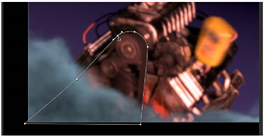

您可以应用蒙版来限制每个节点对图像的影响。下面演示如何创建 Bezier 蒙版以限制颜色校正。
要创建和应用贝塞尔蒙版:
| 1。 | 单击节点图中的空白区域，以便在节点树中不选择任何内容。 |
| 2. | 从工具栏中选择 绘制> Roto 插入旋转节点。 |
| 3. | 在查看器窗口内单击，在图像上绘制 Bezier 形状，如下所示: |

| 4. | 要细化形状，请单击一个点以选中它，然后拖动以调整其位置。 |
| 5. | 要创建锐角，请选择点，单击鼠标右键并选择 尖头 . |
| 6. | 要向形状添加点，只需选择 添加点 工具并单击形状的轮廓。 |
| 7. | 当你对形状满意时，拖动 面具 连接器从 Exposure1 节点的输出 Roto 节点。 |
在 Exposure1 控制面板中，遮罩通道选项现在设置为 Rgba.alpha 连接到的节点的通道 面具 输入。在这种情况下，这是 Roto 节点的 alpha 通道。
|
|